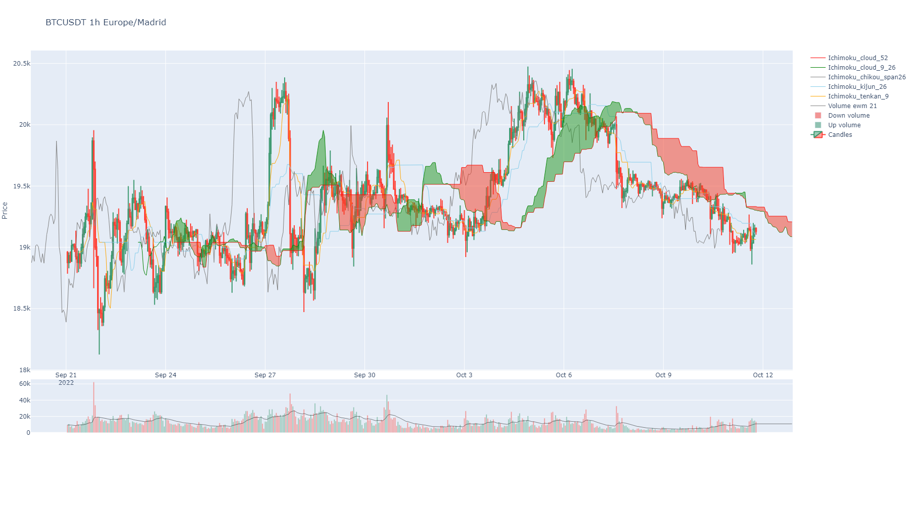

Indicators Module
This module can calculate trading indicators.
To import this module:
from handlers import indicators
Indicators
BinPan own indicators and utils.
- handlers.indicators.ichimoku(data: DataFrame, tenkan: int = 9, kijun: int = 26, chikou_span: int = 26, senkou_cloud_base: int = 52, suffix: str = '') DataFrame
The Ichimoku Cloud is a collection of technical indicators that show support and resistance levels, as well as momentum and trend direction. It does this by taking multiple averages and plotting them on a chart. It also uses these figures to compute a “cloud” that attempts to forecast where the price may find support or resistance in the future.
https://school.stockcharts.com/doku.php?id=technical_indicators:ichimoku_cloud
https://www.youtube.com/watch?v=mCri-FFvZjo&list=PLv-cA-4O3y97HAd9OCvVKSfvQ8kkAGKlf&index=7
- Parameters
data (pd.DataFrame) – A BinPan Symbol dataframe.
tenkan (int) – The short period. It’s the half sum of max and min price in the window. Default: 9
kijun (int) – The long period. It’s the half sum of max and min price in the window. Default: 26
chikou_span (int) – Close of the next 26 bars. Util when spotting what happened with other ichimoku lines and what happened before Default: 26.
senkou_cloud_base – Period to obtain kumo cloud base line. Default is 52.
suffix (str) – A decorative suffix for the name of the column created.
- Return pd.DataFrame
A pandas dataframe with columns as indicator lines.
from binpan import binpan sym = binpan.Symbol(symbol='LUNCBUSD', tick_interval='1m', limit=500) sym.ichimoku() sym.plot()
{kind=link}
- handlers.indicators.ker(close: Series, window: int) Series
Kaufman’s Efficiency Ratio based in: https://stackoverflow.com/questions/36980238/calculating-kaufmans-efficiency-ratio-in-python-with-pandas
- Parameters
close (pd.Series) – Close prices serie.
window (int) – Window to check indicator.
- Return pd.Series
Results.
Indicators utils
- handlers.indicators.split_serie_by_position(serie: Series, splitter_serie: Series, fill_with_zeros: bool = True) DataFrame
Splits a serie by values of other serie in four series for plotting purposes. It means will get 4 series with different situations:
serie is over the splitter serie.
serie is below the splitter serie.
splitter serie is over the serie.
splitter serie is below the serie.
- Parameters
serie (pd.Series) – A serie to classify in reference to other serie.
splitter_serie (pd.Series) – A serie to split in two couple of series classified by position reference.
fill_with_zeros (bool) – Fill nans with zeros for splitted lines like MACD to avoid artifacts in plots.
- Return tuple
A tuple with four series classified by upper position or lower position.
- handlers.indicators.df_splitter(data: DataFrame, up_column: str, down_column: str) list
Splits a dataframe y sub dataframes to plot by colored areas.
- Parameters
data (pd.DataFrame) – Indicator Dataframe
up_column (str) – Name of the column to plot green when up side.
down_column (str) – Name of the column to plot green when down side.
- Return list
A list with splitted dataframes to plot for.
- handlers.indicators.zoom_cloud_indicators(plot_splitted_serie_couples: dict, main_index: list, start_idx: int, end_idx: int) dict
It zooms the cloud indicators in an index interval for a plot zoom.
- Parameters
plot_splitted_serie_couples (dict) – Splitted indicators for cloud colored area plotting.
main_index (list) – The BinPan general index for cutting.
start_idx (int) – A index to cut.
end_idx (int) – A index to cut.
- Return dict
All indicators cut.
- handlers.indicators.shift_indicator(serie: Series, window: int = 1)
It shifts a candle ahead by the window argument value (or backwards if negative)
- Parameters
serie (pd.Series) – A pandas Series.
window (int) – Times values are shifted ahead. Default is 1.
- Return pd.Series
A series with index adjusted to the new shifted positions of values.
- handlers.indicators.ffill_indicator(serie: Series, window: int = 1)
It forward fills a value through nans while a window of candles ahead.
- Parameters
serie (pd.Series) – A pandas Series.
window (int) – Times values are shifted ahead. Default is 1.
- Return pd.Series
A series with index adjusted to the new shifted positions of values.